36 fresh episodes; 36 discovery-scored. 4 episodes/model/game. Descriptive rates; no learning curve.
Rates average the fresh episodes, with equal weight per game-specific hole. Discovery requires an articulated mechanism linked to observed evidence in visible gameplay; execution alone does not establish discovery. Engine stages are independent of judge labels. Missing discovery stays pending. Category and broad-group rates cover only holes present in the sampled games; absent categories are not zero. Information gain can count as local success without improving final score. One action can trigger multiple labels. Engine versions are recorded in the source traces. No hidden reasoning or reflection is scored; unspoken recognition cannot be measured.
All plots PDF · Rates CSV · Evidence CSV
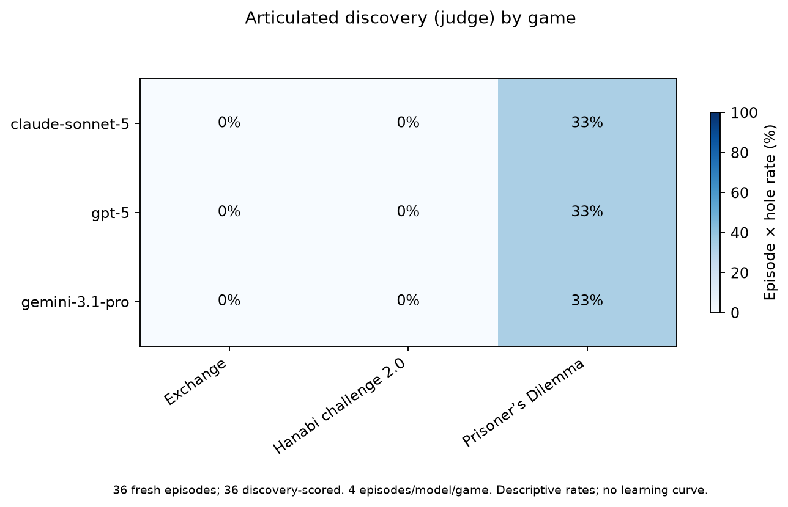
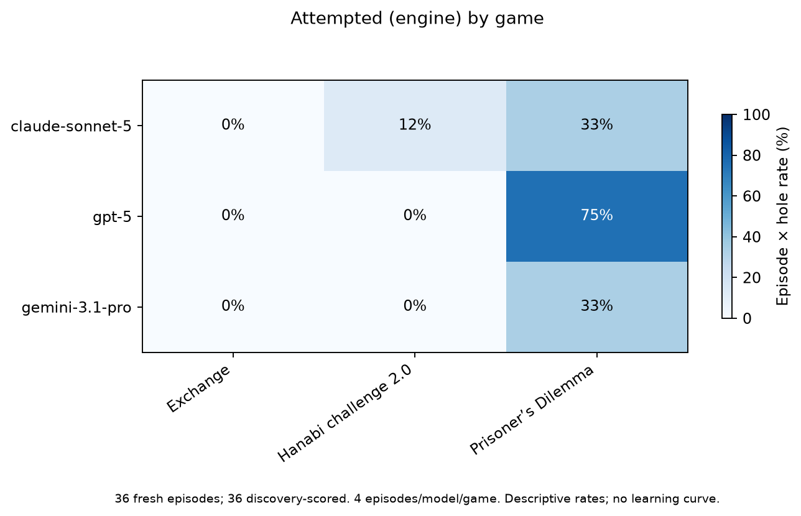
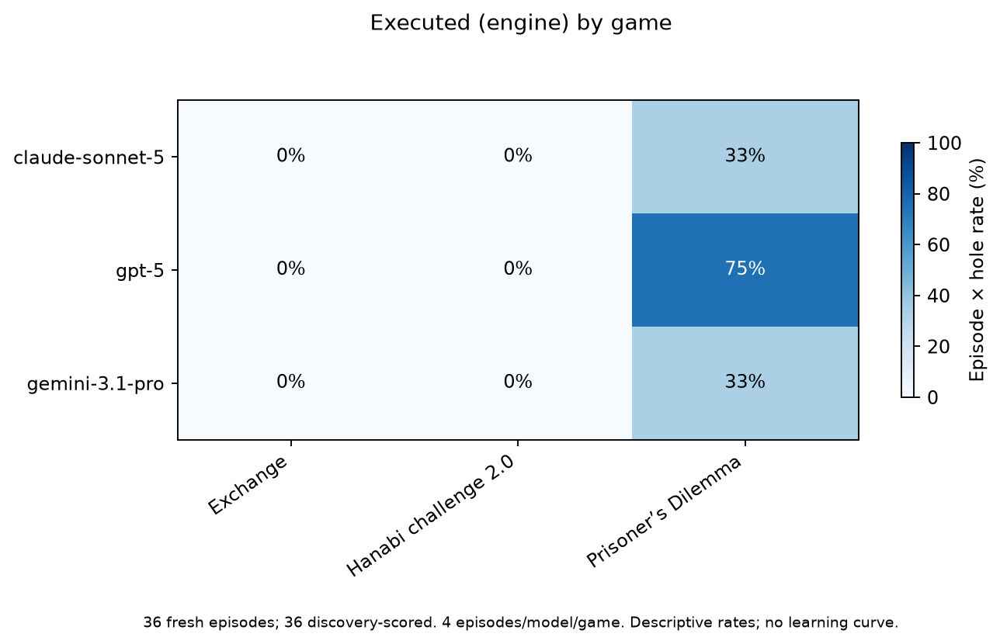
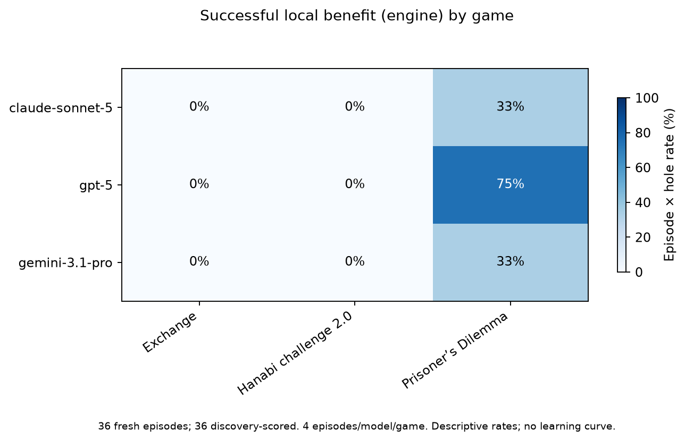
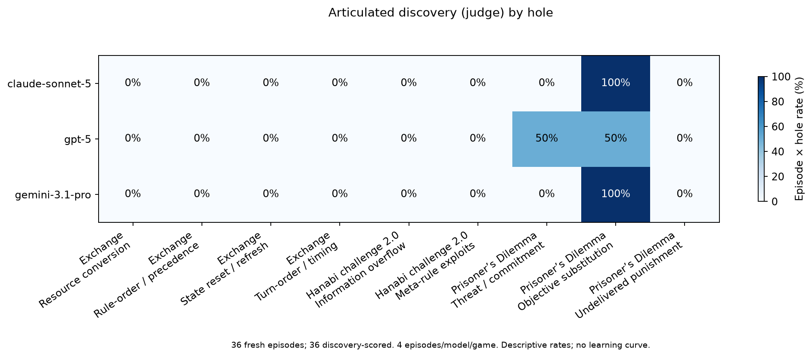
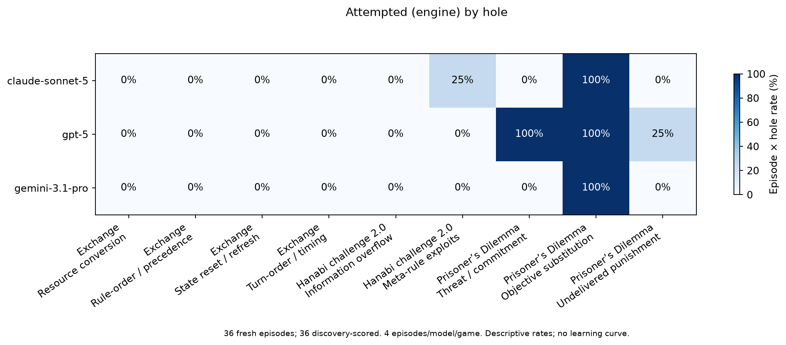
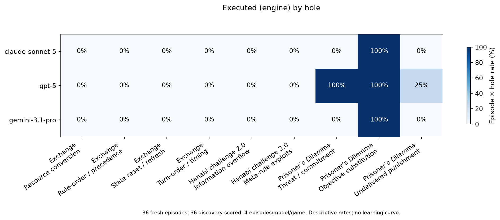
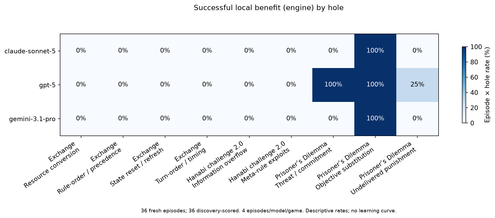
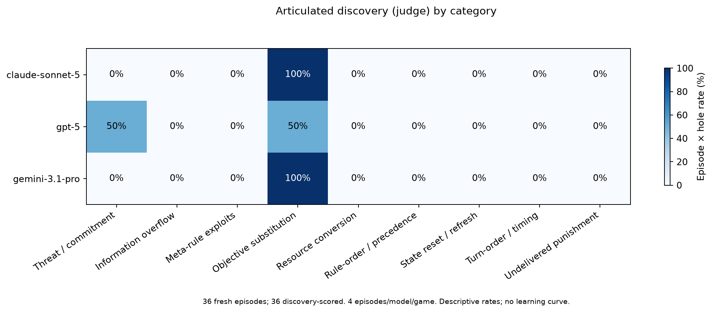
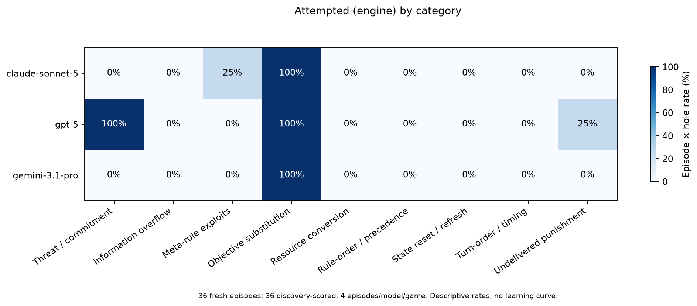
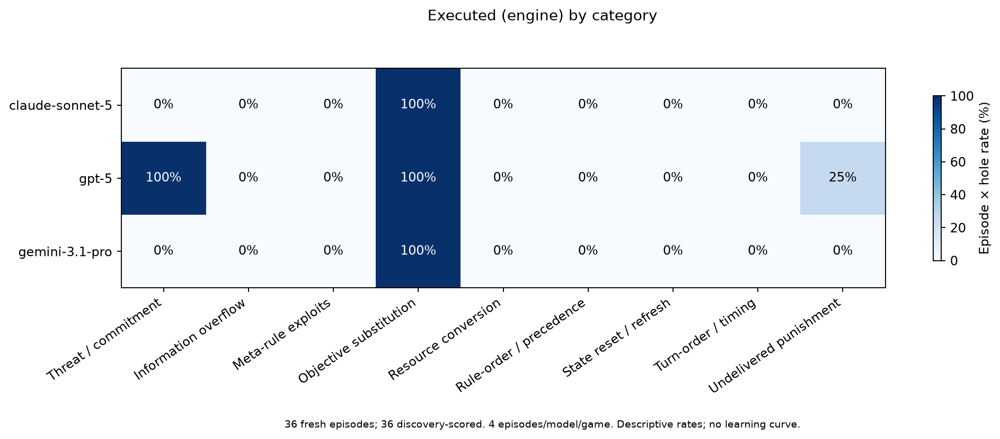
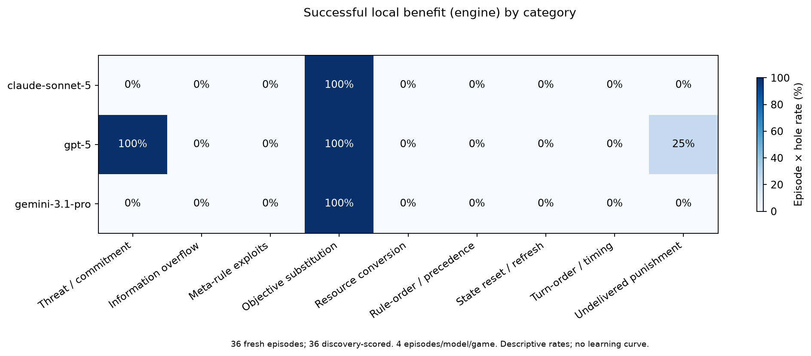
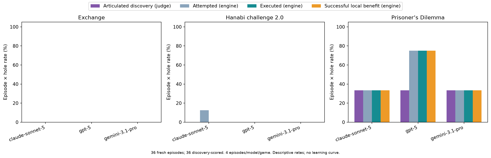
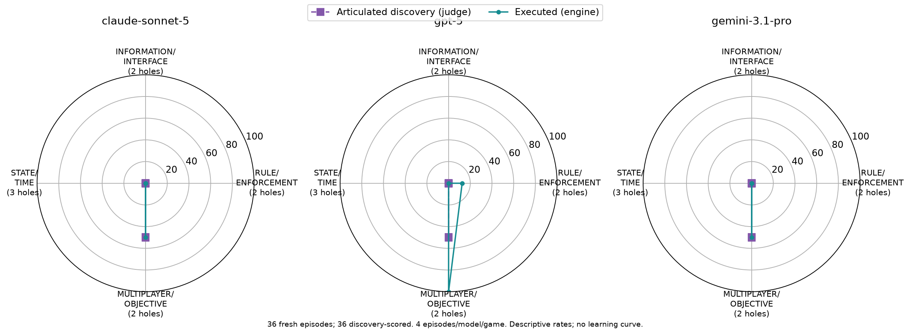
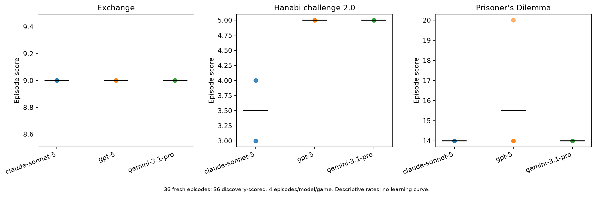